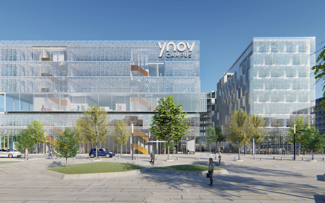

⟵ Retour
Mon Parcours
Collège Ray Charles
2015-2019
Découverte de l’informatique
Lycée Jules Ferry
2019-2022
Bac Pro ASSP, premiers projets web

Ynov Campus Montpellier
2022-2025
Développement, stages, alternance